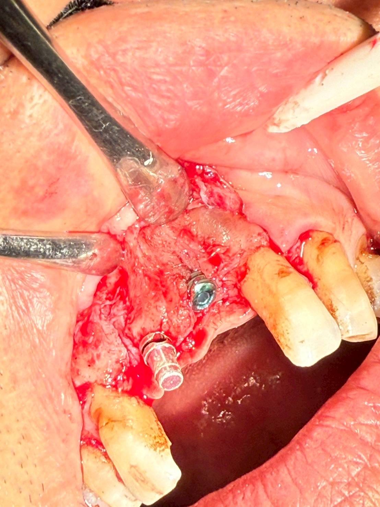
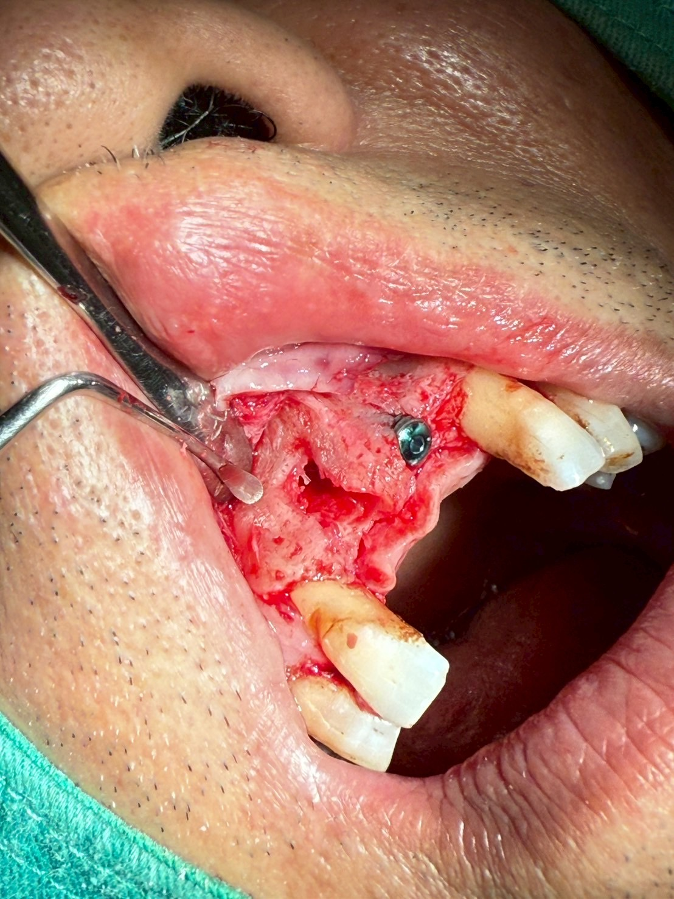
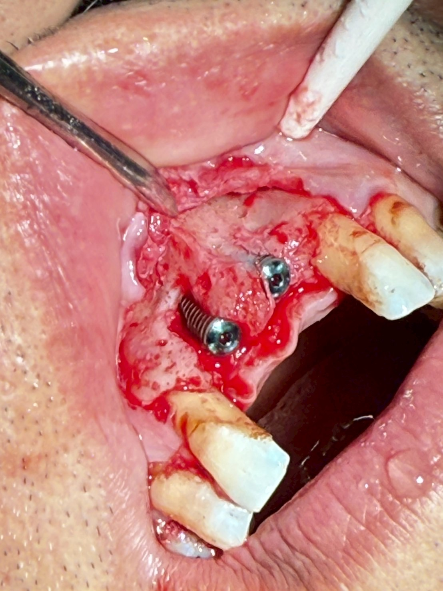
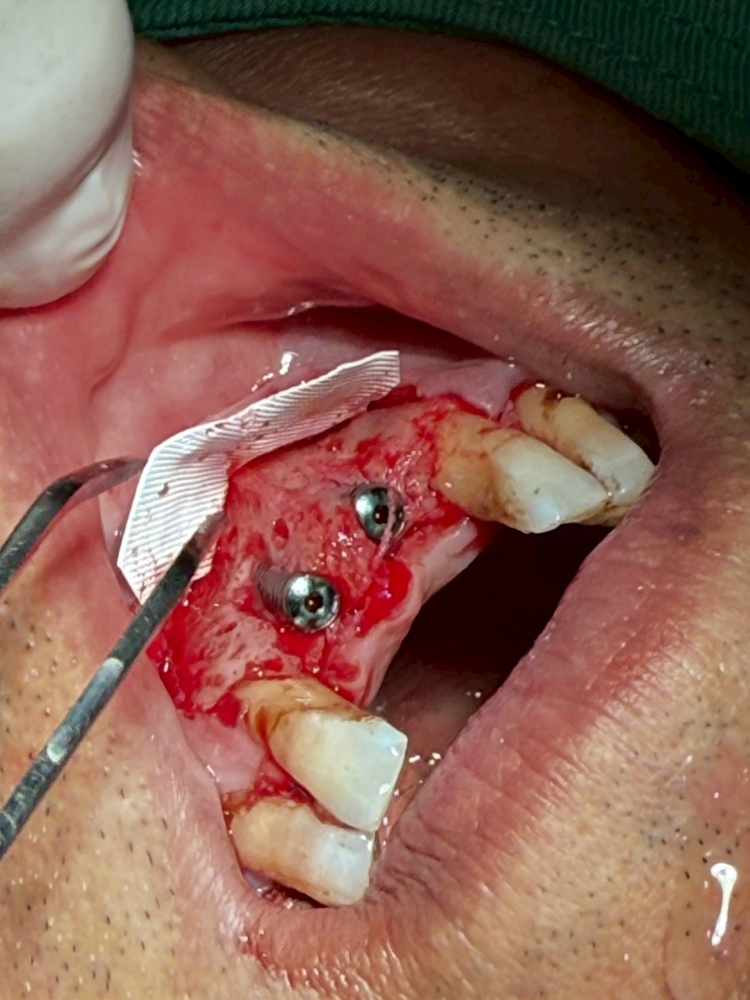
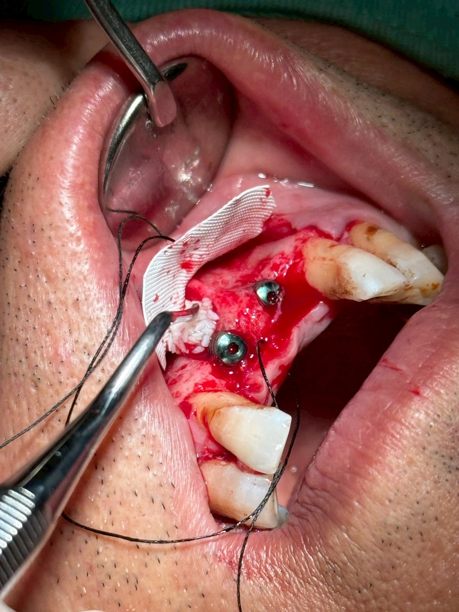
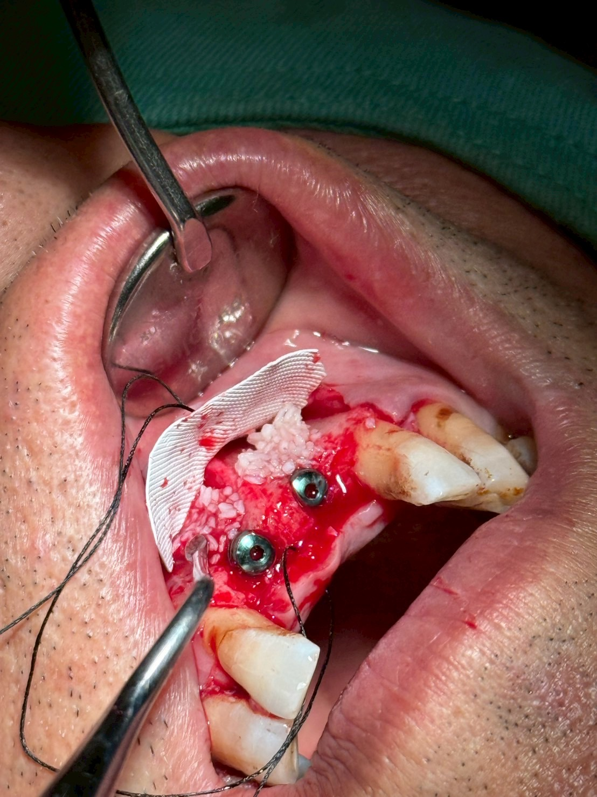
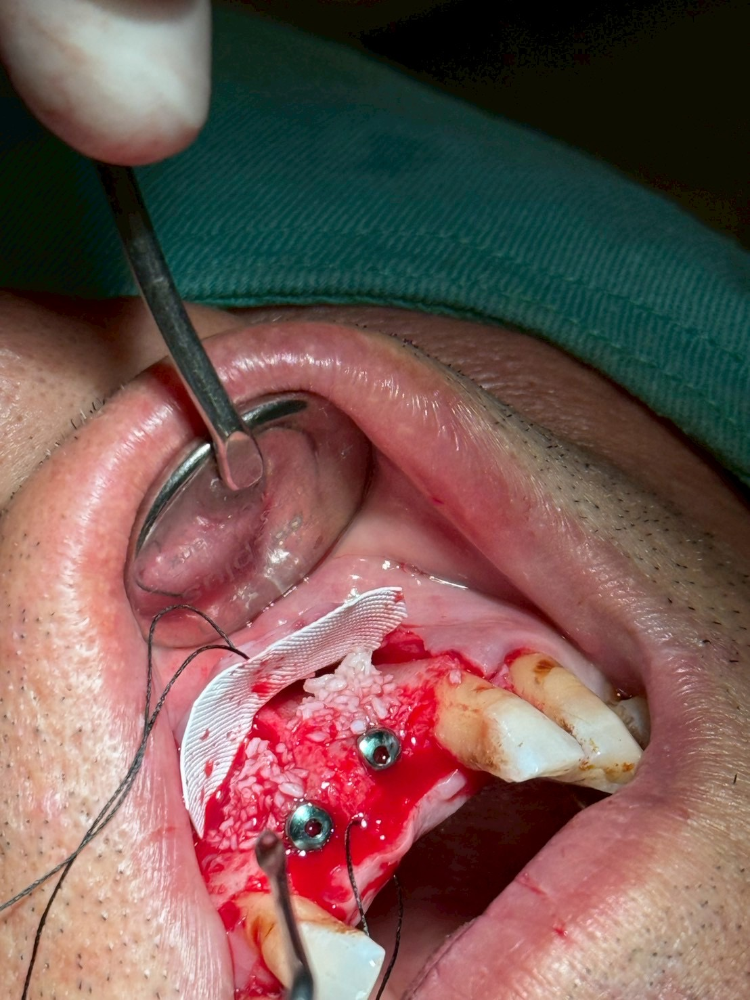
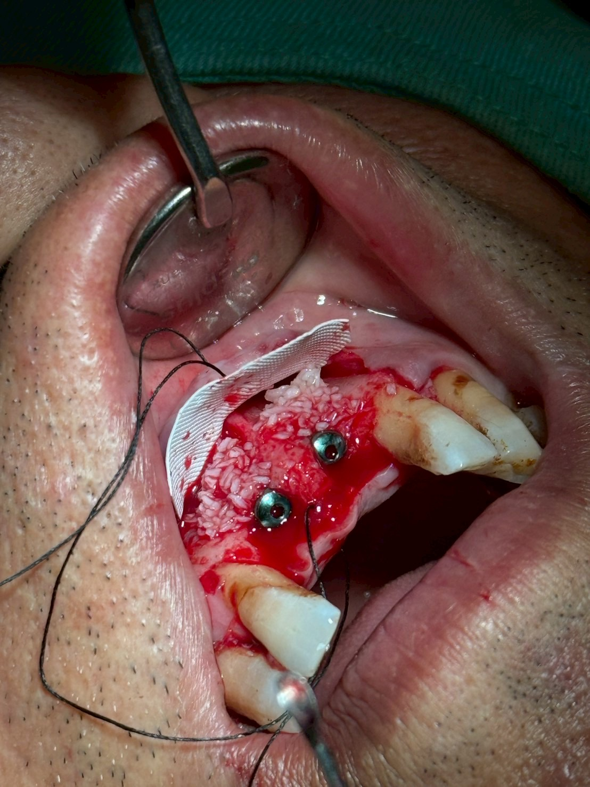

3D數位植牙｜案例分享
Case Report: Delayed Implant Placement with Simultaneous GBR and d-PTFE Membrane Adaptation at Defective Maxillary Central Incisor Sites (#11, #21)
1. Surgical Step Details (Figures 01_4 – 08_3)
01 & 02：翻瓣與骨吸收缺損評估
翻開全層黏膜骨膜瓣後，顯露前牙區齒槽骨。
#11 區域： 唇側骨壁呈現嚴重垂直與水平骨吸收，形成深凹陷。
#21 區域： 齒槽脊極度單薄，骨量無法提供理想的植體三維位置包覆。
03.jpg & 04.jpg：植體植入與螺紋暴露評估
於 #11、#21 預定牙脊位置植入人工植體。
植入後可見 #11 頰側有顯著的骨裂/骨開窗缺陷，植體螺紋大幅暴露於骨廓之外；#21 頰側骨壁亦極為薄弱。
05.jpg：高密度不可吸收再生膜定位
選用高密度聚四氟乙烯膜，裁切至適當大小後，將膜的顎側與鄰牙邊緣穩定塞入骨膜下，準備進行大面積補骨。
06.jpg – 083.jpg：大量顆粒骨粉填補與再生膜覆蓋
於暴露之植體螺紋與頰側凹陷處，大量堆疊顆粒狀骨粉，重建理想的頰側骨豐隆度。
將 d-PTFE 再生膜翻回並完整覆蓋骨粉，阻隔上方軟組織長入，為下方的骨整合與新骨生成提供封閉且穩定的再生空間。
2. Clinical Summary
Diagnosis & Treatment Site: 上顎兩顆正中門齒（#11, #21）拔牙後未做即時補骨，導致嚴重的唇側齒槽脊萎縮與骨缺損。
Surgical Procedure: 執行二次植牙手術，因頰側骨壁大量缺失，同步進行引導骨再生術——填補大量骨粉並覆蓋 d-PTFE 不可吸收再生膜。
Prognosis & Expectations: 透過 GBR 重建唇側骨壁，為植體提供足夠的骨整合包覆，並恢復前牙美觀區所需的唇側膨大度。
臨床專題解析：為什麼拔牙時強烈建議合併齒槽脊保存術（GBR）？
本案例是臨床上非常典型的「缺牙後生理性骨吸收」範例。若能讓患者了解拔牙後的骨頭吸收過程，便能大幅提高其在拔牙當下接受 Socket Preservation 的意願。
1. 拔牙後齒槽骨的自然吸收規律
根據經典文獻（Araújo & Lindhe, 2005; Tan et al., 2012）研究：
吸收速度： 拔牙後 前 3 至 6 個月 是骨吸收最劇烈的時期。
吸收體積： 拔牙第一年內，齒槽脊平均會失去 50% 的水平寬度（Horizontal width），其中高達 30% 的骨吸收發生在術後前 3 個月。
唇側骨壁（Bundle Bone）最脆弱： 前牙區（如本案 #11, #21）的唇側骨壁通常極薄（常 $< 1\text{ mm}$），完全仰賴牙周膜（Periodontal ligament）提供血液循環。一旦拔牙切斷血供，唇側骨壁會發生不可逆的吸收萎縮（Resorption）。
2. 未做 Socket Preservation vs. 即時合併 GBR 的效益對比
比較項目
拔牙時未補骨（自然癒合）
拔牙當下合併 GBR（Socket Preservation）
齒槽骨形態
唇側骨壁嚴重吸收坍塌、牙脊變窄變低（如本案）
最大程度保留牙脊高度與寬度，維持自然骨廓
未來植牙難度
植牙時必然需要複雜的二次補骨（如本案）
植牙時條件優良，多數可直接植入或僅需微量補骨
手術創傷與費用
需大規模翻瓣、補大量骨粉與再生膜，總花費與痛感更高
拔牙創口一次性處置，微創且免去二次大範圍補骨
前牙區美觀度
軟硬組織塌陷，易導致未來植牙牙冠過長、缺黑洞（Black triangle）
保留軟硬組織豐隆度，前牙美觀區（Esthetic zone）成功率高
3. 給患者的溝通建議（Patient Education Points）
在與預計拔牙後植牙的患者溝通時，可用以下觀點說明：
「預防勝於治療」： 拔牙當下把骨粉補進去，就像在房子倒塌前先把地基固化，成本低、創傷小；若等骨頭塌陷後再補（如本案），不僅需要花費雙倍的骨粉與再生膜，手術範圍與術後腫脹也會大幅增加。
前牙美觀區的必要性： 上顎門齒區的唇側骨壁極薄，不補骨幾乎 100% 會塌陷，未來做出來的植牙容易看起來太長、不自然，甚至暴露植體金屬顏色。







